Next: How to split a
Up: Utilities used by CASTEP
Previous: Utility take
Contents
Either utility is used to prepare data files for lev00
for the calculation of the partial charge density as well as DOS/LDOS
using CASTEP wavefunctions. To compile lev1,
you should run the shell-script lev1.comp from the current
directory using the same param.inc file. lev2
should be compiled in directories LEV2_f77 (f77 version,
compile every time you get a new param.inc file) or LEV_f90
(f90 version, to be compiled only once).
First of all, run CASTEP in the band-structure mode
to write the wavefunctions. Note that the  -points mesh
as given by tetr must to be used for the DOS/LDOS
calculation. Then you can run lev1. It is an interactive
menu-driven program and five options are available: DOS, DOp, SRF
and MAP. At the end of the run a file psi2.[option]is
produced that is needed for the subsequent run of the plotter lev00.
Note that the utility lev1 needs the file fort.14
which contains the information necessary to perform the Fast Fourier
Transform (FFT) from the reciprocal to the real space.
-points mesh
as given by tetr must to be used for the DOS/LDOS
calculation. Then you can run lev1. It is an interactive
menu-driven program and five options are available: DOS, DOp, SRF
and MAP. At the end of the run a file psi2.[option]is
produced that is needed for the subsequent run of the plotter lev00.
Note that the utility lev1 needs the file fort.14
which contains the information necessary to perform the Fast Fourier
Transform (FFT) from the reciprocal to the real space.
All states available (their number is NBANDS) can participate.
However, it is possible to do a more sophisticated job by creating
islands of bands, each island being a continuous manifold of
states which can overlap, and then run the calculation for every island.
This way it is possible to do a specific job on particular states.
If all states are to be included, just specify one island with all
states from 1 to NBANDS.
The five options available are listed below:
- DOS

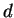
-projected DOS as in Eqs. (3.5)
and (3.7) (with 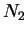
) is calculated using conserving algorithm
for the space integration. The projection is made either on a single
Slater type AO,
or on a linear combination of Gaussians
Here  is the normalisation of a single orbital which depends on
the exponentials,
is the normalisation of a single orbital which depends on
the exponentials,  or
or 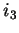
. Noninteractive option.
All the information needed should be provided in the file fort.14.DOS
(see below). Up to Ntask0 spheres (set in dos_task.inc)
can be defined for a single run of lev1.
- PRO local DOS, Eqs. (3.5) and
(3.6), and
 -projected DOS, Eqs. (3.5) and (3.7),
are calculated using nonconserving algorithm for the space integration.
The projection is made on a single AO; its radial part is made either
of a single Slater type AO, or of a linear combination of Gaussians.
Noninteractive option. All the information needed should be provided
in the file fort.14.PRO (see below). Up to Ntask0
spheres can be defined for one run of lev1.
-projected DOS, Eqs. (3.5) and (3.7),
are calculated using nonconserving algorithm for the space integration.
The projection is made on a single AO; its radial part is made either
of a single Slater type AO, or of a linear combination of Gaussians.
Noninteractive option. All the information needed should be provided
in the file fort.14.PRO (see below). Up to Ntask0
spheres can be defined for one run of lev1.
- DOp this is DOS projected on a layer,
see Eqs. (3.5) and (3.8). Interactive option: you will be
asked about each layer, its position and thickness. Up to Ntask0
layers can be specified for one run of lev1. Islands
of bands
 should be provided in the file fort.14a (see
below).
should be provided in the file fort.14a (see
below).
- MAP partial electronic density as in
Eq. (3.1) or (3.2). Islands of bands should be provided
in the file fort.14a (see below).
- SRF partial electronic density which
is 2D integrated over the plane parallel to the slab, i.e.
where 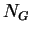
and 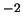
are the number of grid points along vectors
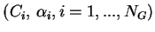
and
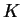
of the cell and 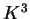
runs
from 1 to 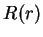
(, , correspond to NGX,
NGY, NGZ in param.inc). You will be asked to provide islands
of bands (as in the file fort.14.SRF) and an output file
psi2.SRF will be produced. Islands of bands should be
provided in the file fort.14a (see below).
Formats of the input files mentioned in this section are provided
below:
- fort.14a: islands of states are provided, i.e.
- number of islands of states (1 integer)
- the first and the last states for the 1st island (2 integers)
- the first and the last states for the 2nd island (2 integers)
- etc.
- fort.14.DOS:
- islands of states as above;
- number of spheres (1 integer);
- then for each sphere:
- on 1 line: Cartesian coordinates of the sphere (in Å), sphere radius
(in Å), 1 or 0 (for Slater or Gaussian AO, respectively)
- if Slater, Eq. (6.2), then on the next line: and
(in Å
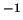
)
- if Gaussian, Eq. (6.3), then on the next line: and
on the following line all the coefficients and exponentials (in Å)
are provided as
.
- fort.14.PRO:
- islands of states as above;
- number of spheres (1 integer);
- then for each sphere:
- on 1 line: Cartesian coordinates of the sphere (in Å), sphere radius
(in Å), 1 or 0 (for Slater or Gaussian AO, respectively), one integer
corresponding to the fine grid of the nonconserving
method, and three flags (0 for 'no' and 1 for 'yes') for whether to
do ,
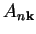
and 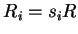
projected DOS.
- then separately for every angular momenta with nonzero flag: specify
the radial part of the orbital (see fort.14.DOS)
- fort.14.DOp:
- islands of states as in other cases;
- number of layers (1 integer);
- then for each layer you provide the following information (one line
per layer):
- Cartesian position of the layer on the
 -axis (in Å);
-axis (in Å);
- layer thickness (in Å);
- 0 for conserving and 1 for non-conserving;
- numbers of grid points along each of the x,y,z directions necessary
for the non-conserving method (3 integers); note that in the case
of the conserving method this data will be ignored.
Next: How to split a
Up: Utilities used by CASTEP
Previous: Utility take
Contents
Lev Kantorovich
2006-05-08